1. Workflow Managers#
Learning Goals
After this lesson, you should be able to:
Explain what workflows are
Explain what workflow managers are and why they’re useful
List some popular tools for workflow management
Explain the relative strengths and weaknesses of different workflow managers
1.1. What’s a Workflow?#
A workflow is a series of steps that must be completed in order to achieve a specific goal. Every project has workflows. For example, if you want to make a pizza, you could use this workflow:
Gather the ingredients 🛒
Make the dough 🌾
Make the sauce 🍅
Chop the toppings 🔪
Stretch the dough 🫓
Add the sauce 🥄
Add the cheese 🧀
Add the toppings 🫑🍄🟫🫒
Bake the pizza 🍕
There are a few details worth pointing out about this example. First, notice that most of the steps depend on others. For instance, you can’t make the dough until after you’ve gathered the ingredients. You can’t stretch the dough until after you’ve made the dough, and so on.
Second, notice that there are some steps that can be done in any order. The pizza will still turn out right if you make the sauce before you make the dough, or if you chop the toppings before doing either of these. These steps can even be done simultaneously: you can make the dough while a friend makes the sauce and another chops the toppings. So there are some steps that must be done in sequence, while there are others that can be done in parallel. That said, even the steps that can be done in parallel depend others. Making the dough, making the sauce, and chopping the toppings all depend on gathering the ingredients.
Third, some steps in a workflow might be optional. If you want a cheese pizza, you can skip the steps that involve chopping and adding toppings. Which steps are necessary depends on what you want as the final result.
Finally, this workflow is one way to make a pizza, but there are other ways. There might not be one specific “correct” workflow for a particular goal. Use a workflow that works well for you.
Research projects have workflows too. For example, suppose you’re working on a study of fish populations in local rivers. One workflow in your project might be to go out in the field and collect fish count data. In most research projects, some of the workflows involve computing. For instance, in the fish population study, you might need to:
Clean up the data collected in the field;
Fit a statistical model to the data;
Create a visualization of the data.
You could use R, Python, or other tools for these. The point is that all of them are workflows.
Sometimes, you might need to run a workflow more than once. For example, you might need to collect, clean, model, and visualize fish count data every year for several years. For workflows that are partially or entirely on a computer, it’s possible to reuse some or even all of the code and commands.
The workflows in a project matter because:
You’ll need to explain the workflows to anyone who joins the project as a collaborator.
You might need to repeat workflows to generate new results or verify old ones.
You’ll need to explain the workflows when you share results (for instance, in a presentation, report, or peer-reviewed article).
Others might want to run the workflows to reproduce your results.
Thoughtful workflow planning and detailed documentation makes a project much more transparent, robust, and reproducible. The subsequent sections discuss how to document workflows and some software tools that are helpful for organizing and running computational workflows.
1.2. Documenting Workflows#
The simplest thing you can do to improve a project’s workflows is document them. For each workflow, at a minimum the documentation should explain:
The purpose (what goal does it achieve?)
How to run it (what are the steps, code, or commands?)
Any necessary inputs and dependencies (what needs to be done first?)
All outputs (what does it produce?)
README files (README.md) are often a good place for workflow documentation,
but you can provide these details in whatever place and format you prefer. The
important things are to provide the documentation and to do so in a way that
makes it easy to find and access.
Diagrams, graphs, or flow charts are often a good way to represent workflows visually. In the graph, show each step as a node or vertex, and show dependence between steps with arrows or edges. For example, Fig. 1.10 shows a diagram of the pizza-making workflow.
{kind=link}

Fig. 1.10 A workflow diagram of the pizza-making workflow.#
The benefit of workflow diagrams is that you can see how steps, or even whole workflows, are related at a glance. Together with other documentation, they typically make it much easier to understand how the project works.
Note
A workflow diagram is usually a directed acyclic graph (DAG), which means that it has direction (an order to the steps) and that there are no cycles (circular sequences of steps).
See also
For more about how to document workflows, see the Document the Workflows section of the UC Davis Library’s Reproducible Research Guide.
1.3. Workflow Managers#
A workflow manager is a tool that can keep track of and run computational workflows. Generally, to set up workflow manager for a project, you have to record the details about each workflow in a structured format. Once that’s done, the workflow manager provides commands you can use to run any of the workflows. Most workflow managers can also:
Automatically run any prerequisite steps or workflows for the workflow you requested;
Automatically cache output files, saving them so that a workflow won’t run again unless its inputs or code change;
Automatically log output messages, saving them to a file so that you can review them as needed;
Automatically load the appropriate virtual environment (see Environment Managers) when running a workflow;
Automatically run steps in parallel if their dependencies allow it;
Support dynamic workflows: workflows that can be reused across many different inputs and outputs;
Facilitate running steps in high-performance and distributed computing environments.
In software engineering contexts, workflow managers are also called build systems.
Note
A task runner is a simple workflow manager, in the sense that task runners usually lack most of the features listed above. They can run a workflow, but little else.
This simplicity makes task runners easy to learn and use. They can be helpful for projects where the workflows are straightforward, but the commands for each step are hard to remember or to type. On the other hand, if you’re already comfortable with a workflow manager, you might as well use that.
Make, created in 1976, was the first workflow manager. It’s still in widespread use and remains popular today. Make uses a text configuration file called a makefile to record workflows. While you could use Make for research computing, it was designed with software engineering—specifically, writing C code—in mind. It also has several limitations, rough edges, and gotchas. Thus we recommend using newer tools that are intended for research computing.
This reader covers the following following workflow managers:
Pixi is primarily an environment manager (see Environment Managers), but it can also provides basic workflow management features. The configuration for Pixi is written in TOML. Pixi can run workflows for any tools or languages.
Snakemake is a workflow manager that originated in the Bioinformatics community, but has since become popular across a wide variety of disciplines. Snakemake combines some of the best features of Make with the flexibility of Python. The configuration for Snakemake is written in a superset of Python. Even if you’re not a Python user, Snakemake is relatively easy to learn and can run workflows for other tools and languages.
targets is a workflow manager and R package. It works especially well if the steps in your workflows correspond to individual R functions. The configuration for targets is written in R. Although R is definitely the focus, targets also provides some support for other tools and languages.
We recommend Pixi because it’s easy to adopt (and doesn’t require any additional software) if you already use it as an environment manager. It’s a good choice for small projects or if you just want to try out a workflow manager. That said, it provides fewer features than a dedicated workflow manager. For instance, it doesn’t provide a way to run tasks in parallel or in distributed computing environments.
We recommend Snakemake as a general-purpose workflow manager. It’s a mature, stable tool and provides all of the workflow manager features listed at the beginning of this chapter. It’s also under active development to fix bugs and add new features as computing methods evolve. Its popularity also means that it’s relatively easy to find help with online.
We recommend the targets package if you’re an R user and want to avoid learning or using any tools from outside of the R ecosystem. While the package provides many features for R, it’s quite limited for other workflows, and most development is done by a single person. At DataLab, we rarely use targets for our projects.
Important
To follow along with this and subsequent chapters, you’ll need to install Pixi, Snakemake, and the targets package on your computer:
Pixi is available for Windows, macOS, and Linux, and generally doesn’t require administrator privileges to install.
Install Pixi by following the official instructions.
Snakemake is available for Windows, macOS, and Linux. The official documentation recommends using Pixi to install Snakemake globally:
pixi global install snakemake -c conda-forge -c bioconda
If you prefer, you can instead use Pixi to install Snakemake on a per-project
basis. Add bioconda to the end of the channels list in pixi.toml, then
run:
pixi add snakemake
The targets package is available for all platforms R supports. You can install the package globally through R’s built-in package manager:
install.packages("targets")
If you prefer, you can instead use Pixi to install targets on a per-project basis:
pixi add r-targets
1.4. Case Study: Davis Bike Counts, Part I#
The City of Davis uses automated counters to collect data about how many bikes pass by two locations: at the intersection of 3rd Street and University Avenue (the 3rd Street bike obelisk) and at the intersection of Loyola Drive and Pole Line Road. The City publishes the data they collect online.
See also
DataLab also uses this dataset as an example in our Intermediate R workshop series. You can learn more about the dataset there.
In the subsequent chapters, we’ll use an example project with a minimal analysis of the Davis bike counts data to demonstrate several workflow managers. The project consists of three R scripts that clean, model, and visualize the dataset, respectively. This is the initial directory structure of the project:
├── data/
│ └── 2020_davis_bikes.rds
├── pixi.lock
├── pixi.toml
└── R/
├── 01_clean.R
├── 02_model.R
└── 03_plot.R
All of the project files are in a single project directory (with subdirectories). This makes it easy to back up or share the project.
Important
Click here to download the Davis Bike Counts example project.
After downloading the project, you’ll also need to unzip it. You can use your
computer operating system’s built-in graphical tools or the unzip shell
command:
unzip example-project.zip
The project is set up to use Pixi as an environment manager (but not a workflow
manager). As a consequence, you can install all of the required software to run
the project and launch a shell that’s ready to use simply by running the pixi shell command.
The data cleaning, modeling, and visualization steps are already split into separate scripts. Separating cleaning from analysis is always a good practice because it helps ensure that all analysis code uses the same clean data as a starting point.
For this project, the modeling and visualization steps are both quite simple, so it’s not really necessary to separate them. Here, they’re separated primarily to make it easy to treat them as separate steps in workflow managers. However, separating them also paves the way for expanding the project into something more complex.
The scripts are numbered (01_, 02_, 03_) to indicate the order in which
they’re meant to run. This is a common way to indicate a workflow without using
a workflow manager. While the numbers are helpful as a reminder, there’s no
guarantee that the someone will actually run them in the specified order. The
numbers also force a linear workflow, and they’re inconvenient if we later need
to insert another step before the last one.
The 01_clean.R script reads the dataset from the 2020_davis_bikes.rds file
and reshapes it so that it’s ready for analysis. It saves the resulting data to
a file at data/interim/2020_davis_bikes_clean.rds. Here’s the code:
#!/usr/bin/env Rscript
#
# This script generates a clean intermediate version of the 2020 Davis bike
# counts dataset.
#
# You can run this script from the command line to automatically generate the
# intermediate dataset, or you can source this script and call its functions
# manually.
library("tidyr")
read_bike_data = function(path) {
readRDS(path)
}
clean_bike_data = function(bikes) {
# Reshape twice so that the dataset's unit of observation is date-location.
# Reshape so the unit of observation is date.
bikes2 = pivot_wider(bikes, values_from = value, names_from = variable)
# Reshape so the unit of observation is date-location.
bikes3 = pivot_longer(
bikes2,
cols = c(third, loyola),
values_to = "count",
names_to = "site"
)
bikes3
}
make_clean_bike_data = function(
out_path = "data/interim/2020_davis_bikes_clean.rds",
path = "data/2020_davis_bikes.rds"
) {
bikes = read_bike_data(path)
message("Read '", path, "'")
bikes = clean_bike_data(bikes)
# Create output directory if it doesn't exist.
out_dir = dirname(out_path)
if (!dir.exists(out_dir)) {
dir.create(out_dir, recursive = TRUE)
}
saveRDS(bikes, out_path)
message("Wrote '", out_path, "'")
}
if (sys.nframe() == 0) {
# This code will only run when you run the script from the command line.
make_clean_bike_data()
}
The 02_model.R script reads the cleaned data (2020_davis_bikes_clean.rds),
adds some features useful for modeling, fits a linear regression model, and
then saves the model to models/bikes_model.rds. Here’s the code:
#!/usr/bin/env Rscript
#
# This script fits a linear model to the clean 2020 Davis bike counts dataset.
#
# You can run this script from the command line to automatically generate the
# fitted models, or you can source this script and call its functions manually.
make_bike_features = function(bikes) {
bikes$pandemic = bikes$date > as.Date("2020-03-14")
bikes
}
fit_bike_model = function(bikes) {
lm(count ~ date*site*pandemic, bikes)
}
predict_bike_model = function(bikes, model) {
bikes$count = predict(model, bikes)
bikes
}
save_bike_model = function(
out_path = "models/bikes_model.rds",
data_path = "data/interim/2020_davis_bikes_clean.rds"
) {
bikes = readRDS(data_path)
message("Read '", data_path, "'")
bikes = make_bike_features(bikes)
model = fit_bike_model(bikes)
# Create output directory if it doesn't exist.
out_dir = dirname(out_path)
if (!dir.exists(out_dir)) {
dir.create(out_dir, recursive = TRUE)
}
saveRDS(model, out_path)
message("Wrote '", out_path, "'")
}
if (sys.nframe() == 0) {
# This code will only run when you run the script from the command line.
save_bike_model()
}
Finally, the 03_plot.R script reads the cleaned data
(2020_davis_bikes_clean.rds) and the model (models/bikes_model.rds) and
uses these to make a scatter plot of the data overlaid with lines for the model
predictions. The script saves the plot to figures/bikes_plot.png. Here’s the
code:
#!/usr/bin/env Rscript
#
# This script makes a plot of the fitted linear model for the 2020 Davis bike
# counts dataset.
library("ggplot2")
source("R/02_model.R")
plot_bike_model = function(
bikes,
model,
preds = predict_bike_model(bikes, model)
) {
ggplot() +
aes(x = date, y = count, color = site) +
geom_line(data = bikes) +
geom_line(data = preds, linetype = "dashed") +
geom_vline(xintercept = as.Date("2020-03-14"))
}
save_bike_plot = function(
out_path = "figures/bikes_plot.png",
model_path = "models/bikes_model.rds",
data_path = "data/interim/2020_davis_bikes_clean.rds"
) {
bikes = readRDS("data/interim/2020_davis_bikes_clean.rds")
message("Read '", data_path, "'")
bikes = make_bike_features(bikes)
model = readRDS("models/bikes_model.rds")
message("Read '", model_path, "'")
plot = plot_bike_model(bikes, model)
ggsave(out_path, plot, create.dir = TRUE)
message("Wrote '", out_path, "'")
}
if (sys.nframe() == 0) {
# This code will only run when you run the script from the command line.
save_bike_plot()
}
All of the scripts are executable, but also designed so that they can be used
as libraries of functions. In other words, other scripts can import the
functions from these scripts (via R’s source function) and use them as needed
without executing the imported scripts.
This project will serve as a reference point as we introduce different workflow managers.